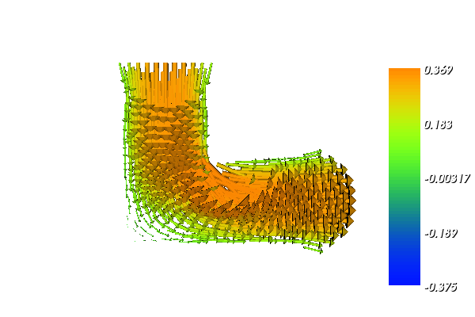
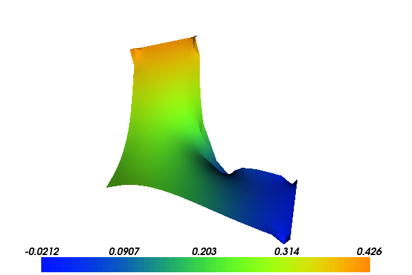

13. Incompressible Navier-Stokes equations¶
This demo is implemented in a single Python file,
demo_navier-stokes.py, which contains both the variational
forms and the solver.
This demo solves the incompressible Navier-Stokes equations. It illustrates how to:
- Implement a splitting method where different fields are coupled via a set of partial differential equations
- Use different iterative solvers and different preconditioners for different steps of the solution process
- Use time-dependent Expressions
- Set boundary conditions based on geometric constraints
- Perform time-stepping
13.1. Equation and solution method¶
We consider the incompressible Navier-Stokes equations on a domain \(\Omega \subset \mathbb{R}^2\), consisting of a pair of momentum and continuity equations:
Here, \(u\) is the unknown velocity, \(p\) is the unknown pressure, \(\nu\) is the kinematic viscosity, and \(f\) is a given source. There exist many solution strategies for the incompressible Navier-Stokes equations. One of the oldest is the splitting method proposed by Chorin (1968) and Temam (1969), often refered to as Chorin’s method.
In Chorin’s method, one first ignores the pressure in the momentum equation and computes the tentative velocity \(u_h^{\star}\) according to:
Here, \(\langle \cdot, \cdot \rangle\) denotes the \(L^2(\Omega)\) inner product. Subsequently, the velocity is projected to the space of divergence free fields. This step may be obtained by subtracting the variational problem for the tentative velocity \(u_h^{\star}\) from the incompressible Navier-Stokes equations and using the continuity equation. One obtains the following pair of equations for computing the velocity \(u_h^n\) and pressure \(p_h^n\) at time \(t = t_n\) based on the tentative velocity \(u_h^{\star}\):
13.2. Problem definition¶
In this demo, we solve the incompressible Navier-Stokes equations on an L-shaped domain. The L-shape is the subset of the unit square obtained by removing the upper right quadrant.
The flow is driven by an oscillating pressure \(p_{\mathrm{in}}(t) = \sin 3t\) at the inflow \(y = 1\) while the pressure is kept constant \(p_{\mathrm{out}} = 0\) at the outflow \(x = 1\).
At the inflow and outflow, we impose free flow (“do nothing”) boundary conditions for the velocity and no-slip boundary conditions on the remaining boundary.
The (kinematic) viscosity is set to \(\nu = 0.01\), the time step is \(\Delta t = 0.01\) and the length of the time interval is \(T = 3\). The solution is computed using continuous vector-valued piecewise quadratics for the velocity, and continuous scalar piecewise linears for the pressure (the Taylor-Hood elements).
With the above input the solution for the velocity \(u\) and pressure \(p\) will look as follows:
 {kind=link}
{kind=link}
13.3. Implementation¶
This demo is implemented in the demo_navier-stokes.py file.
First, the dolfin module is imported:
from dolfin import *
For the parallel case, we turn off log messages from processes other than the the root process to avoid excessive output:
# Print log messages only from the root process in parallel
parameters["std_out_all_processes"] = False;
We then load the mesh for the L-shaped domain from file:
# Load mesh from file
mesh = Mesh("../lshape.xml.gz")
We next define a pair of function spaces \(V\) and \(Q\) for the velocity and pressure, and trial and test functions on these spaces:
# Define function spaces (P2-P1)
V = VectorFunctionSpace(mesh, "Lagrange", 2)
Q = FunctionSpace(mesh, "Lagrange", 1)
# Define trial and test functions
u = TrialFunction(V)
p = TrialFunction(Q)
v = TestFunction(V)
q = TestFunction(Q)
The time step, the length of the time interval, and the kinematic viscosity are defined by:
# Set parameter values
dt = 0.01
T = 3
nu = 0.01
The time-dependent pressure boundary condition can be defined using
the Expression
class:
# Define time-dependent pressure boundary condition
p_in = Expression("sin(3.0*t)", t=0.0)
Note that the variable t is not automatically updated during
time-stepping, so we must remember to manually update the value of the
current time in each time step.
We may now define the boundary conditions for the velocity and pressure. We define one no-slip boundary condition for the velocity and a pair of boundary conditions for the pressure at the inflow and outflow boundaries:
# Define boundary conditions
noslip = DirichletBC(V, (0, 0),
"on_boundary && \
(x[0] < DOLFIN_EPS | x[1] < DOLFIN_EPS | \
(x[0] > 0.5 - DOLFIN_EPS && x[1] > 0.5 - DOLFIN_EPS))")
inflow = DirichletBC(Q, p_in, "x[1] > 1.0 - DOLFIN_EPS")
outflow = DirichletBC(Q, 0, "x[0] > 1.0 - DOLFIN_EPS")
bcu = [noslip]
bcp = [inflow, outflow]
We collect the boundary conditions in the two lists bcu and
bcp so that we may easily iterate over them below when we apply
the boundary conditions. This makes it easy to add new boundary
conditions or use this demo program to solve the Navier-Stokes
equations on other geometries.
We next define the functions and the coefficients that will be used below:
# Create functions
u0 = Function(V)
u1 = Function(V)
p1 = Function(Q)
# Define coefficients
k = Constant(dt)
f = Constant((0, 0))
Note that one may use the time step dt directly in the
form. However, by using the Constant class, we may freely change the
size of the time step without triggering regeneration of code.
The next step is now to define the variational problems for the three steps of Chorin’s method. We do this by defining a pair of bilinear and linear forms for each step:
# Tentative velocity step
F1 = (1/k)*inner(u - u0, v)*dx + inner(grad(u0)*u0, v)*dx + \
nu*inner(grad(u), grad(v))*dx - inner(f, v)*dx
a1 = lhs(F1)
L1 = rhs(F1)
# Pressure update
a2 = inner(grad(p), grad(q))*dx
L2 = -(1/k)*div(u1)*q*dx
# Velocity update
a3 = inner(u, v)*dx
L3 = inner(u1, v)*dx - k*inner(grad(p1), v)*dx
Since the bilinear forms do not depend on any coefficients that change during time-stepping, the corresponding matrices remain constant. We may therefore assemble these before the time-stepping begins:
# Assemble matrices
A1 = assemble(a1)
A2 = assemble(a2)
A3 = assemble(a3)
# Use amg preconditioner if available
prec = "amg" if has_krylov_solver_preconditioner("amg") else "default"
During time-stepping, we will store the solution in VTK format
(readable by MayaVi and Paraview). We therefore create a pair of files
that can be used to store the solution. Specifying the .pvd suffix
signals that the solution should be stored in VTK format:
# Create files for storing solution
ufile = File("results/velocity.pvd")
pfile = File("results/pressure.pvd")
The time-stepping loop is now implemented as follows:
# Time-stepping
t = dt
while t < T + DOLFIN_EPS:
# Update pressure boundary condition
p_in.t = t
We remember to update the current time for the time-dependent pressure boundary value.
For each of the three steps of Chorin’s method, we assemble the right-hand side, apply boundary conditions and solve a linear system. Note the different use of preconditioners. Incomplete LU factorization is used for the computation of the tentative velocity and the velocity update, while algebraic multigrid is used for the pressure equation if available:
# Compute tentative velocity step
begin("Computing tentative velocity")
b1 = assemble(L1)
[bc.apply(A1, b1) for bc in bcu]
solve(A1, u1.vector(), b1, "gmres", "default")
end()
# Pressure correction
begin("Computing pressure correction")
b2 = assemble(L2)
[bc.apply(A2, b2) for bc in bcp]
solve(A2, p1.vector(), b2, "cg", prec)
end()
# Velocity correction
begin("Computing velocity correction")
b3 = assemble(L3)
[bc.apply(A3, b3) for bc in bcu]
solve(A3, u1.vector(), b3, "gmres", "default")
end()
Note the use of begin and end; these improve the readability
of the output from the program by adding indentation to diagnostic
messages.
At the end of the time-stepping loop, we plot the solution, store the solution to file, and update values for the next time step:
# Plot solution
plot(p1, title="Pressure", rescale=True)
plot(u1, title="Velocity", rescale=True)
# Save to file
ufile << u1
pfile << p1
# Move to next time step
u0.assign(u1)
t += dt
Finally, we call the interactive function to signal that the plot
window should be kept open and allow us to interact with (zoom,
rotate) the solution.
13.4. Complete code¶
from dolfin import *
# Print log messages only from the root process in parallel
parameters["std_out_all_processes"] = False;
# Load mesh from file
mesh = Mesh("../lshape.xml.gz")
# Define function spaces (P2-P1)
V = VectorFunctionSpace(mesh, "Lagrange", 2)
Q = FunctionSpace(mesh, "Lagrange", 1)
# Define trial and test functions
u = TrialFunction(V)
p = TrialFunction(Q)
v = TestFunction(V)
q = TestFunction(Q)
# Set parameter values
dt = 0.01
T = 3
nu = 0.01
# Define time-dependent pressure boundary condition
p_in = Expression("sin(3.0*t)", t=0.0)
# Define boundary conditions
noslip = DirichletBC(V, (0, 0),
"on_boundary && \
(x[0] < DOLFIN_EPS | x[1] < DOLFIN_EPS | \
(x[0] > 0.5 - DOLFIN_EPS && x[1] > 0.5 - DOLFIN_EPS))")
inflow = DirichletBC(Q, p_in, "x[1] > 1.0 - DOLFIN_EPS")
outflow = DirichletBC(Q, 0, "x[0] > 1.0 - DOLFIN_EPS")
bcu = [noslip]
bcp = [inflow, outflow]
# Create functions
u0 = Function(V)
u1 = Function(V)
p1 = Function(Q)
# Define coefficients
k = Constant(dt)
f = Constant((0, 0))
# Tentative velocity step
F1 = (1/k)*inner(u - u0, v)*dx + inner(grad(u0)*u0, v)*dx + \
nu*inner(grad(u), grad(v))*dx - inner(f, v)*dx
a1 = lhs(F1)
L1 = rhs(F1)
# Pressure update
a2 = inner(grad(p), grad(q))*dx
L2 = -(1/k)*div(u1)*q*dx
# Velocity update
a3 = inner(u, v)*dx
L3 = inner(u1, v)*dx - k*inner(grad(p1), v)*dx
# Assemble matrices
A1 = assemble(a1)
A2 = assemble(a2)
A3 = assemble(a3)
# Use amg preconditioner if available
prec = "amg" if has_krylov_solver_preconditioner("amg") else "default"
# Create files for storing solution
ufile = File("results/velocity.pvd")
pfile = File("results/pressure.pvd")
# Time-stepping
t = dt
while t < T + DOLFIN_EPS:
# Update pressure boundary condition
p_in.t = t
# Compute tentative velocity step
begin("Computing tentative velocity")
b1 = assemble(L1)
[bc.apply(A1, b1) for bc in bcu]
solve(A1, u1.vector(), b1, "gmres", "default")
end()
# Pressure correction
begin("Computing pressure correction")
b2 = assemble(L2)
[bc.apply(A2, b2) for bc in bcp]
solve(A2, p1.vector(), b2, "cg", prec)
end()
# Velocity correction
begin("Computing velocity correction")
b3 = assemble(L3)
[bc.apply(A3, b3) for bc in bcu]
solve(A3, u1.vector(), b3, "gmres", "default")
end()
# Plot solution
plot(p1, title="Pressure", rescale=True)
plot(u1, title="Velocity", rescale=True)
# Save to file
ufile << u1
pfile << p1
# Move to next time step
u0.assign(u1)
t += dt
print "t =", t
# Hold plot
interactive()